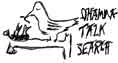

This is a project where it is understood or is to be hoped that it will be understood to not be of much use as it stands. It is being placed on the site with the idea that it is a suggestion, but in order for the material that is completed to be available to future generations while not imposing the stress of a deadline to complete it on myself, it is being put up in its most advanced state. It will be updated periodically, but is not being presented as a finished or even very useful work at this point.
 —p.p.
—p.p.
This is a simple book-style search tool which can be used to find materials on this site that are not subjects of actual suttas. Subjects about the Dhamma dealing with a large variety of subjects relating to the Buddha's teaching.
A book-style index was decided upon over that of a computer-style search tool (e.g., Googgle) as a consequence of the observation that most people cannot find what they are looking for unless they know the exact wording which will bring them there. Here the user is expected to browse the content of the index to find wording likely to bring him to what he seeks. A further advantage to a book-style index is the discovery of many subjects unthoughtof before; something entirely missing from computer searches.
For an Index of subjects and proper names found directly in the suttas or their introductry essays or footnotes, see Sutta Search. For a dictionary of Pāḷi terms see this site's version of the Pāḷi Text Society's  Pāḷi-English Dictionary. The full 2-volume edition of the Dictionary of Pāḷi Proper Names [DPPN] is available in
Pāḷi-English Dictionary. The full 2-volume edition of the Dictionary of Pāḷi Proper Names [DPPN] is available in  PDF form for reading or download from the Files and Dowloads page.
PDF form for reading or download from the Files and Dowloads page.
[A] [B] [C] [D]
[E] [F] [G] [H] [I]
[J] [K] [L] [M]
[N] [O] [P] [Q] [R]
[S] [T] [U] [V] [W] [X] [Y] [Z]
Abbreviations:
BI = Buddhist India, T.W. Rhys Davids.
DB = Dialogues of the Buddha, T.W. & C.A.F. Rhys-Davids
DN = Dīgha Nikāya but used as a general sutta identfier for both Pāḷi texts and translations
Aboriginal tribes in India, (BI pg 43, 44, 54, 55)
Ādityas, the gods, (BI pg 236)
Āgama, later term for Nikāya, (BI pg 168)
Agni, (BI pg 216, 219, 235, 242)
Ajātasattu, king of Magadhā, (BI pg 3, 12-16, 89)
Ājīvakas, an order of ascetics, (BI pg 143, 290)
Ākhyānas (Akkhānas), (BI pg 183, 185)
Aldermen of the guilds, (BI pg 96, 97)
Alexander, his Indian coin, (BI pg 100);
his invasion of India, (BI pg 267, 268)
Alphabets, (BI pg 116-118, 124, 131)
Ambattha's visit to the Sākiyas, (BI pg 19)
Amitra-ghāta, (BI pg 272)
Ancient history and modern, the dividing line between, (BI pg 240)
Andhra dynasty, (BI pg 310-312)
Angas, name of a tribe, (BI pg 23);
name of Jain books, (BI pg 164)
Añjana, the Buddha's grandfather, (BI pg 18)
Añjana Wood, near Sāketa, (BI pg 39)
Anurādhapura, (BI pg 69, 70, 75, 85, 201, 277, 311)
Āpastamba, date of, (BI pg 32)
Arachosia, (BI pg 268)
Archaeology in India, (BI pg 41, 132)
Architecture in old times, (BI pg 63f.)
Ārdha-Māgadhi, (BI pg 154)
Ariyan, (Aryan) immigration, routes of, (BI pg 31);
Ariyan ablution, the,
settlements in the South, (BI pg 156)
Armies, size of, in India, (BI pg (BI pg 266))
Āsavas (Intoxications) (BI pg 296)
Asceticism, see Tapas
Asoka, not mentioned in the Buddhist canon, (BI pg 174),
nor by the Greeks, (BI pg 272);
Indian accounts of, (BI pg 276);
his treatment of the Buddha relics, (BI pg 278);
his marriage,(BI pg 279)
his coronation, (BI pg 280);
his conquest of Kalinga, (BI pg 282);
his conversion, (BI pg 282-284);
his buildings, (BI pg 286-290);
his Edicts, (BI pg 290-299);
his missions, (BI pg 298-300);
his sending the Bo tree to Ceylon, (BI pg 302-304);
other measures to propagate his Dhamma, (BI pg 304);
his failures, (BI pg 305);
his character, (BI pg 306)
Asoka Avadāna, (BI pg 276)
Āsramas, the four, brahmin theory of (BI pg 249, 250)
DN an ancient tribe, (BI pg 27, 203)
Assattha tree, (BI pg 230, 234)
Asuras, see Titans
Asvaghosha, poet, (BI pg 315)
Ātānaṭiya Suttanta, (BI pg 219)
Atharva Veda, (BI pg 166, 213, 252)
Attha Sālinī, revised in Ceylon, (BI pg 175)
Authors, none known before Asoka, (BI pg 179, 180)
Avantī, one of the four great kingdoms, (BI pg 3, 4, 27, 28);
incorporated into Magadhā, (BI pg 267);
probable home of Pāli, (BI pg 153, 154)
Babylon, (BI pg 104, 113, 115, 116)
Bacon's Essays, (BI pg 166)
Banyan Deer Jātaka, (BI pg 190-194, 198)
Barrows, round, the origin of stūpas, (BI pg 80)
Barter, traffic by, (BI pg 100)
Basket makers, (BI pg 54, 90)
open-air, (BI pg 75)
Benares, conquest of, by Kosalā, (BI pg 25);
size of, (BI pg 34)
Bengal, ignored in old records, (BI pg 29)
Bhaddiya, consul of the Sākiyas, (BI pg 19)
Bhaggava, the Tathāgata not to be addressed by (2nd topic) and VP 2.MV001-006 Ch 1 § 12 Horner.
Bhandarkar, Professor, (BI pg 32, 150, 177)
Bharahat Tope, (BI pg 10, 82, 198, 209, 288)
Bharhut, see Bharahat
Bharukaccha, first mention of, (BI pg 31);
trade at, (BI pg 38);
sea vogages from, (BI pg 96, 104, 116)
Bimbisāra, king of Magadhā, (BI pg 3);
builds Rājagaha, (BI pg 37)
Bindusāra, king of Magadhā (BI pg 272, 304)
Blacksmiths, (BI pg 264)
Bodh Gaya, (BI pg 288, 302)
Bodhi, prince of the Vacchas, (BI pg 7)
Bodhi, the sacred tree, (BI pg 229)
Bodhisatva, progress of the idea, (BI pg 177)
Books and MSS., (BI pg 110)
Bower MS., (BI pg 124, 128)
Brahma-Vihāras, (BI pg 197)
Brāhmaṇas, language of, (BI pg 147);
Brāhmī Lipī, later name of the Asoka alphabet, (BI pg 117)
Brahmin, spelling of the word, (BI pg 2);
their social rank, (BI pg 54);
trades they followed, (BI pg 57);
could marry a Kshatriya, (BI pg 59);
were considered low-born as compared with Kshatriyas, (BI pg 60);
their theories as to learning, (BI pg 118);
claimed to be divinities, (BI pg 118);
as grammarians, (BI pg 149, 317);
their influence in Buddhist times, (BI pg 150, 159);
their struggle against the rajputs, (BI pg iii, 158);
the debt we owe to the learned, (BI pg 210);
their divisions, (BI pg 249)
Bricks used for writing on, (BI pg 121-124)
Buddha Carita, (BI pg 315)
Buddhaghosa, (BI pg 201, 277)
Buddhist Literature, down to Asoka, chronological table of, (BI pg 188)
Bühler, Professor, (BI pg 43, 113, 126, 202, 319)
Burgess, James, (BI pg 31)
Cariyā Piṭaka, (BI pg 176, 196)
Carpenters, (BI pg 264)
Cattle, customs as to village, (BI pg 45, 46)
Cetis, an ancient tribe, (BI pg 26, 29)
Ceylon Chronicles, (BI pg 261, 274-277)
Ceylon, ignored in the old records, (BI pg 29);
date of first Aryan settlement in, (BI pg 33, 104);
history of language in, (BI pg 155);
were the Pāli books forged there? (BI pg 170f.);
scholarship in, (BI pg 304)
Champā, (BI pg 23, 35, 104, 260)
Chandragupta, emperor of India, (BI pg 259-271)
Childers, Professor, (BI pg 201)
Chunam work in ancient buildings, (BI pg 69, 82)
Cities, very few in number, (BI pg 50);
architecture of, (BI pg 61f.);
great size of, (BI pg 35, 263)
Clans, in ancient India, (BI pg 17-22)
Climate, influence of, (BI pg 42, 43)
the oldest Sanskrit, (BI pg 136)
Colours, the four, (BI pg 53, 62)
Commensality and connubium, (BI pg 52, 57, 58)
Common lands, (BI pg 45-48)
Constantine, (BI pg 298)
Copper plates, (BI pg 122-125)
Cowell, Professor, (BI pg 189)
Credit, instruments of, (BI pg 101)
Cutch, see Kacch
Dakkhināpatha, (BI pg 30)
Dancing and music, (BI pg 186)
Dantapura, settlement at, (BI pg 31)
Dasaratha, Asoka's grandson, (BI pg 143)
Dead, curious customs as to disposal of the, (BI pg 78-82)
Deussen, Professor, (BI pg 190)
Devadaha, the Buddha's ancestor, (BI pg 18)
Devadatta, the Buddha's cousin, (BI pg 13, 193)
Dhamma, meaning of, (BI pg 292);
sketch of Asoka's, (BI pg 294-297)
Dhamma-kathika, (BI pg 167)
Dhana Nanda, king of Magadhā, (BI pg 267)
Dialogues of the Buddha, date of, (BI pg 107)
Diana, the goddess, (BI pg 217)
Dīpavaṁsa, (BI pg (BI pg 276, 277))
Disease due to escape of the soul, (BI pg 252)
Divyāvadāna, a book of legends, (BI pg 10)
D'Oldenburg, Professor Serge, (BI pg 209)
Drama, use of the, (BI pg 184-186)
Dravidian, names of imports into the West, (BI pg 116);
tribes, civilisation of, (BI pg 53, 56);
dialects, charged with Sanskrit, (BI pg 156);
kingdoms, (BI pg 311)
Dundubhissara, (BI pg 299, 300)
Dushṭa Gāmini, king of Ceylon, (BI pg 278, 311)
Dvāraka, capital of Kambojā, (BI pg 28)
Earth, the mother, (BI pg 47, 219)
East, the immovable, (BI pg 237)
Economic conditions, (BI pg 87f., 258)
Eights, the name of a book of lyrics, (BI pg 178)
Elephant, legend of the decoy, (BI pg 5);
Elu, the Prakrit of Ceylon, (BI pg 155)
Endogamy and exogamy, (BI pg 52)
Epics, growth of, (BI pg 179-183, 206)
Eran coins, (BI pg 115)
Family rights, (BI pg 47)
Fausböll, Professor, (BI pg 189, 200, 204)
Feer, M. Leon, (BI pg 194)
Fergusson, James, (BI pg 227)
Fick, Dr., (BI pg 62, 87, 202)
Fields, custom as to cultivation of, (BI pg 46);
not salable, (BI pg 47)
Fire-drill, (BI pg 231)
Fishing, only in rivers, not in the sea, (BI pg 93)
Fleet, Mr. J.F., (BI pg 31)
Folk-lore, (BI pg 208)
Forests, large expanse of, (BI pg 20, 21);
see Mahā-vana
Fortifications of Pāṭaliputta, (BI pg 262)
Forts in ancient times, (BI pg 38, 63)
Franke, Professor Otto, (BI pg 315)
Freedom of thought in ancient India, (BI pg 247, 258)
Gaggarā, queen of Angā, (BI pg 35)
Gambling halls, public, provided by the king. (BI pg 71, 72)
Gandak, river, (BI pg 259)
Gandhārā, the country, (BI pg 28)
Gandharvas, (BI pg 220)
Garudas, harpies or griffins, (BI pg 224)
Gavelkind, custom of, (BI pg 47)
Gedrosia, ceded to Magadhā, (BI pg 268)
Geiger, Professor, (BI pg vi, 275)
Geldner, Professor, (BI pg 181)
Giribbaja, old capital of Maghaha, (BI pg 37, 38)
Giri-nagara (Girnar), in the Kathiawad, (BI pg 134, 312)
Godhāvari river, (BI pg 27, 30, 156)
Gold plates used for writing, (BI pg 124)
Golden Age, in India, (BI pg 187)
Gonaddha, in Avantī, (BI pg 103)
Gosinga Vihara, MS. from, (BI pg 122, 124, 128, 173)
Grammar, studied in the North-West, (BI pg 203)
Grierson, Mr., (PTS DB II pg 32)
Grünwedel, Dr., (BI pg 303)
Guilds of work people, the eighteen, (BI pg 90f., 96)
Gupta dynasty, (BI pg 150, 308)
Hardy, Professor E., (BI pg 298)
Hardy, Spence, (BI pg 30)
distinct from Wanderers, (BI pg 143)
Hillebrandt, Professor, (BI pg 242)
Himālayas, (BI pg 29);
dialects of, (BI pg 32);
as boundary, (BI pg 260);
missionaries sent to, (BI pg 299-301)
Hiranya-kesin, date of, (BI pg 32)
History, how treated in brahmin records, (BI pg 157)
Hoernle, Dr., (BI pg 120)
Hopkins, Professor, (BI pg 87, 152)
Hume's "Essay," (BI pg 166)
Hunting and hunters, (BI pg 44, 93)
Images, none in ancient times, (BI pg 241)
of Zulu Headrest
from The Serpent Power
Buddha statue skin and bones,
it's as if one had been lost in the woods and had been shown the way out,
Indika of Megasthenes, (BI pg 260).
Indra, the god, (BI pg 232-235)
Inscriptions in India, were first in Pāli, (BI pg 130);
gradual growth of use of Sanskrit in, (BI pg 131-139);
specimen of an Asoka, (BI pg 135);
donations recorded in, (BI pg 151)
Inspirational Quotes from Non-Buddhist Sources;
truths scattered about
truth stays where it is
Castaneda: the power to be free
faith in translations
Hugo, times when the unknown reveals itself
Spencer, employing our time
Florinda Donner, speaking with Castaneda
Johnson's extraordinary accuracy and flow of language
Shakespeare, lust in action
sermon by Jeremy Taylor, chaplain to King Charles I of England, 1600-1649, plus or minus as retold by Carl Sandberg, Remembrance Rock.
English saying c. 1600 meaning 'pace yourself
Metternich, Where everything is tottering
sayings of Ogma, the Druid god that invented Ogam and an image of Ogam
Abbassides describes the wealth of a Mohamadan Caliph ... and what he thought of it
Edward Courtenay Earl of Devon c 1400
Gibbon, The History of the Decline and Fall of the Roman Empire
John Cleese, So Anyway
The 4 Virtues of a Sioux Warrior
Marcel Proust, Remembrance of Things Past
ProustRemembrance of Things Past,
Proust, Remembrance of Things Past
Plutarch, Lives of Illustrious Men,
goodbye to you, Aubrey
Thomas Hardy Old Michael Mail, in Under the Greenwood Tree
Proust, Remembrance of Things Past,
C. Wright Mills, writing about modern conditioning of mass opinion
Hardy, Clym contemplating the horror show of the events of his life in The Return of the Native,
Herman Melville, Omoo, the more ignorant and degraded men are, the more contemptuously they look upon those whom they deem their inferiors
Jaron Lanier You Are Not A Gadget, VR as a consciousness-noticing machine
Kafka
Elie Wiesel, Night, "We received no food. We lived on snow; it took the place of bread."
Judge not
C. Dickins,
John Steinbeck, Sweet Thursday
Andrew Hurley From "A Note on the Translations," in Jorge Luis Borges, Collected Fictions,
Thomas Carlyle, The French Revolution, all things are recycled;
Thomas Carlyl, The French Revolution, we are not in control;
Thomas Carlyle, The French Revolution, looking at the reflections of a dying king;
Richard Henry Dana, Jr., Two Years Before the Mast, if we would learn truths by strong contrasts;
Steinbeck, Fauna advises Suzy in Sweet Thursday.
Interest on loans, (BI pg 101)
Intermarriages in ancient India, (BI pg 59)
Internal evidence as to the age of literary records, (BI pg 165)
Intoxication, god of, see Soma;
ethical, (BI pg 296)
Irish legends, (BI pg 181)
Irrigation, (BI pg 46, 86, 264)
Isisinga legend, (BI pg 201)
I-Tsing's travels, (BI pg 35)
Jacobi, Professor, (BI pg 31, 163, 164, 183, 185, 227. 235)
Jain records, (BI pg 12, 163, 318)
Jain temple at Khujarao, (BI pg 285, 290)
Jains, founder of, (BI pg 41);
early name of, (BI pg 143)
Janaka, king of Videha, (BI pg 26)
Jātaka Book, discussion of history of, (BI pg 189-208);
summary of results, (BI pg 207, 208)
Jewellers, (BI pg 93)
Jumna, the river, (BI pg 27)
Kacch, Gulf of, (BI pg 28, 32, 38)
Kahāpana, square copper coin, (BI pg 100-102)
Kāḷāsoka, king of Magadhā, makes Pāṭaliputta the capital, (BI pg 37)
Kalinga, earliest settlement in, (BI pg 31)
Kalpa-rukkha, the Wishing Tree, (BI pg 227)
Kambojā, the country, (BI pg 28)
Kammāssa-dhamma, in the Kurū country, (BI pg 27)
Kampilla, capital of the Kurus, (BI pg 27, 35)
Kāñcipura, (BI pg 156)
Kanoj, capital1 of the Kurus, (BI pg 27)
Kapilavastu, the old town and the new, (BI pg 18, 103)
Kāsī, township of, matter of dispute between Kosalā anil Magadhā, (BI pg 3);
the Kāsis as one of the sixteen great tribes, (BI pg 24)
Kassapa, the Buddha, (BI pg 229)
Kassapa-gotta, a Buddhist missionary, (PTS DB II pg 299, 300)
Kathā Vatthu, the book, age of, (BI pg 167, 176;)
author of, (BI pg 299)
Kennedy, Mr., (BI pg 115)
Kharavela, king of Kalinga, (BI pg 310)
Kharosṭrī alphabet, (BI pg 124)
Kolarian tribes, (BI pg 53, 56)
Konāgamana, the Buddha, (BI pg 290)
Kosalā, one of the four great Kingdoms, (BI pg 3);
importance of, in the Buddha's time, (BI pg 25);
its influence on language, (BI pg 147);
the language of, its place in history, (BI pg 153);
the Rāmayana arose in, (BI pg 183);
centre of Buddhist literary activity, (BI pg 183)
Kosambī, city on the Jumna. (BI pg 3, 36, 103)
Kshatriyas, (BI pg 53);
working as artisans, (BI pg 54, 55);
not always Aryan by race, (BI pg 56);
when made outcaste, (BI pg 58);
disputed the claim of the brahmins to social supremacy, (BI pg 61)
Kurus, ancient tribe, (BI pg 27)
Kusinārā, the Mallian town, (BI pg 26, 37, 103)
Land tenure, (BI pg 46f.)
Language, outline of history of, in India, (BI pg 153, 211)
Learning, its nutriment, (BI pg 111)
Leather-workers, (BI pg 54, 92)
Lena dialect, (BI pg 154)
Lettering, an ancient game, (BI pg 108)
Levi, Professor, (BI pg 124, 240)
Licchavis, the clan, (BI pg 26, 40);
their public hall for religious and philosophical discussion, (BI pg 141);
their political power,(BI pg 25, 260)
Linga, worship of, (BI pg 166)
Literature, pre-Buddhistic, (BI pg 120f.);
Pāli, (BI pg 161f.)
Luck, goddess of, see Siri;
Asoka's view of, (BI pg 295)
Lüders, Dr., (BI pg 201)
McCrindle, his Ancient India, (BI pg 261)
Macchas, an ancient tribe, (BI pg 27)
Macdonell, Professor, (BI pg 226)
Madda, the country, (BI pg 29, 39)
Madhurā, on the Jumna, (BI pg 36);
in South India, (BI pg 311)
Magadhā, one of the four great kingdoms,(BI pg 3);
one of the sixteen main tribes, (BI pg 24);
its struggle with Champā, (BI pg 260);
in Alexander's time, (BI pg 267);
after Asoka's death, (BI pg 309 310)
Mahā-bharata, (BI pg iii, 183, 184, 190, 214, 255)
Mahā Kaccāna, lived at Madhurā, (BI pg 36)
Mahā Kosalā, king of Kosalā, (BI pg 8, 10)
Mahā-nama, (BI pg 278)
Mahā-samaya Suttanta, (BI pg 219)
Mahā-setthi, (BI pg 97)
Mahā-sudassana Jātaka, (BI pg 195-197)
Mahā-vaṁsa, (BI pg 276-278)
Malia-vana, the Great Wood, (BI pg 20, 21, 41, 142)
Mahā-vastu,(BI pg 173)
Māhissati, (BI pg 103)
Mahosadha, his underground dwelling, (BI pg 66)
Maine, Sir Henry, (BI pg 238)
Mallas, their Mote Hall, (BI pg 19);
their territory, (BI pg 26);
their power, (BI pg 29)
Mallikā, queen at Sāvatthi, her hall for public debates, (BI pg 141)
Marcus Aurelius, (BI pg 307)
Maruts, wind gods, (BI pg 236)
Maung-gon, gold plates from, (BI pg 124, 126)
Medicine, ancient, (BI pg 231)
Megasthenes, (BI pg 49, 50, 260-268, 274)
Mesa inscription, (BI pg 113)
Mesopotamia, its influence on India, (BI pg 70)
Metal-work, (BI pg 90)
Middle Country, the so-called, 172
Milinda, the book, (BI pg 37, 38, 167, 173)
Millionaires, (BI pg 102)
Mithilā, capital of Videha, (BI pg 37)
Moggallāna, (BI pg 288)
Mora-nivāpa, (BI pg 142)
Mortgage, not allowed, (BI pg 46)
Mote Halls, in the old republics, (BI pg 19);
in heaven, (BI pg 66)
Mother Earth, (BI pg 47, 219, 220)
Mountains, Spirit of the, (BI pg 220)
Nāgas, siren-serpents, (BI pg 220-224, 233. 235)
Nālandā, in Magadhā, (BI pg 103)
Nibbāna (see also Nirvana),
conditioned? Is Nibbāna conditioned?
Nikāyas, the five, (BI pg 168);
differ in doctrine, (BI pg 173);
age of, (BI pg 176);
importance of, (BI pg 187);
tree-worship in, (BI pg 226)
Nirvana, (see also, Nibbāna) under the tree, (BI pg 231)
Northern and Southern Buddhism, discussion of the phrase, (BI pg 171-173)
Occupation, facility of change of, (BI pg 56, 57)
Octroi duties, (BI pg 98)
Oldenberg, Professor, (BI pg 181)
Ophir, perhaps - Sovīra, (BI pg 38)
Order, the Buddhist, (BI pg 304, 316)
Paithana, see Patiṭṭhana
Pajāpati, the god, (BI pg 235)
essays concerning, (BI pg Pajapati's Problem, Pajapati's Problem, SN.14.1-10)
Pajjota, king of Avant, (BI pg 3f. )
Pāli, its relation to Sanskrit, (BI pg 120-153);
the Pāli literature, (BI pg 161f.;
Text Society, 163)
Pañca-nekāyika, (BI pg 168)
Pañchālas, ancient tribes, (BI pg 27, 203)
Paramatta, the god, (BI pg 224, 256)
Pārāmitās, the ten, a late doctrine, (BI pg 177)
Parantapa, king at Kosambī, 7
Parasāriya, a brahmin teacher, (BI pg 144)
Pārāyana, sixteen lyrics, (BI pg 178)
Pasenadi, king of Kosalā, (BI pg 3, 8-11, 19)
Pataliputta, capital of Magadhā, (BI pg 203);
its size and fortifications, (BI pg 262)
Pātimokkha, rules of the order, learnt by heart, (BI pg 111)
Patiṭṭhāna, (BI pg 30, 103, 311)
Pāvā, a capital of the Mallas, (BI pg 26)
Peasantry, social position of, (BI pg 51)
Peppé, Mr. Peppé's discovery of the Sākiya Tope, (BI pg 84, 130, 131)
Peṭakin, one who knows a Piṭaka, (BI pg 167)
Peta Vallhu, the book, age of, (BI pg 176)
Phallus-worship, (BI pg 165)
Philpot, Mrs., (BI pg 224)
Pingalaka, a king, (BI pg 176)
Pippal tree, (BI pg 230, 234)
Pischel, Professor, (BI pg 148, 154)
Piyadassi, name of Asoka, (BI pg 273-276)
Population in ancient India, (BI pg 18, 33)
Prakrit, meaning of the term, and date of, (BI pg 154)
Prices of commodities, (PTS DB II pg 101)
Prinsep, his first readings of the Asoka inscriptions, (BI pg 273)
Progress (BI pg iv societies, 238, 239)
Pukkusāti, king of Gandhārā, (BI pg 28)
Rainy season, (BI pg 112)
Rāja, meaning of the word on old documents, (BI pg 19)
Rājagaha, capital of Magadhā, (BI pg 36, 37)
Rājasthan, dialects of, (BI pg 32)
Rājasūya sacrifices, (PTS DB II pg 203)
Rāma-gāma, (BI pg 290)
Rāma-ganga river, (BI pg 259)
Rāmayana, geography of, (BI pg 31, 34);
place of origin of, (BI pg 183)
Rapson, Mr., (BI pg 136)
Republics, in ancient India, (BI pg 1, 2);
organisation of, (BI pg 17f.);
their Mote Halls, (BI pg 18);
consuls in the, (BI pg 19);
list of names of, (BI pg 22)
Rhys-Davids, Mrs., on economic conditions, (BI pg 87);
on the Attlia Sālinī, (BI pg 175);
on the meaning of Dhamma, (BI pg 292)
Riddles of Sakka, an old Suttanta, (BI pg 180)
Rig Veda, (BI pg 30, 46, 213, 223, 226, 232, 236, 242)
Roruka, later Roruva, capital of Sovīra, (BI pg 38)
Rudradāman's inscription, (BI pg 28, 134, 267)
Sacrifice, brahmin theory of, (BI pg 240-242);
lay view, of (BI pg 248, 249);
Asoka's view of, (BI pg 296)
Sāgala, capital of the Maddas, (BI pg 38)
Sāketa, town in Kosalā, (BI pg 39, 103)
Sākiyas, the clan, (BI pg 17f.);
Viḍūdabha's campaign against, (BI pg 11);
pride of, (BI pg 11);
the Sākiya tope, (BI pg 17, 90, 100, 130, 133);
subject to Kosalā, (BI pg 259)
Sakka, the god, the riddles he asked, (BI pg 180);
takes the place of Indra, (BI pg 234)
Samaratī, queen of the Vacchas, (BI pg 7)
Sanam Kumāra, the god, (BI pg 224)
Sānchi Tope, (BI pg 198, 288)
Sanitary arrangements, (BI pg 78)
Sanskrit, Indian use of the term, (BI pg 154);
its relation to Pāli, (BI pg 128-139;
date of the use of, in India, 134-136, 315, 316);
compared to Latin, (BI pg 136, 137);
was it a spoken language? (BI pg 148, 149, 154);
its alphabets, (BI pg 155);
of the schools, (BI pg 211)
Sāriputta, (BI pg 169, 288)
Sāvatthi, in Nepal, capital of Kosalā, (BI pg 25, 40, 103, 290)
Scrollwork, along buildings, (BI pg 77)
Seleukos Nikator, (BI pg 268)
Self-torture, see Tapas
Semitic alphabets, (BI pg 114)
on the Gosinga anthology, (BI pg 124);
on the Asoka inscriptions, (BI pg (BI pg 132));
on the post-Asoka inscriptions, (BI pg 152);
on the Jātaka verses, (BI pg 205);
on the Ceylon chronicles, (BI pg 276)
Seniya, an ascetic, (BI pg 245)
Setavya, in Kosalā, (BI pg 103)
Seven-storied buildings, (BI pg 70)
Sigālovada Suttanta, (BI pg 185)
Silas, a tract, (BI pg 107, 215)
Singhalese, the so-called canon of the, (BI pg 171);
commentaries, (BI pg 201, 207)
Siri, the goddess of luck, (BI pg 217)
Sisunāga, king of Magadhā, makes Vesāli the capital, 37
Slaves in ancient India, origin, position, and numbers of, (BI pg 55, 263)
Smith, Mr. Vincent, (BI pg 315)
Soḷasi "not worth a sixteenth part."
Social grades in ancient India, (BI pg 52-62)
Soma, the intoxicating drink, as god, (BI pg 219, 231, 235)
Soṇa, the river, (PTS DB II pg 24)
Soul-theories, souls in trees, (BI pg 227);
size and shape of the soul, (BI pg 250);
absent in disease and sleep, (BI pg 252)
South India, not mentioned in the Buddhist canon, (BI pg 29-32, 174)
Sovīra, the country, (BI pg 29, 38, 104);
the port, (BI pg 116)
Spelling, in Indian inscriptions, compared with English, (BI pg 132-135)
Spiritual matters, (BI pg 247 257)
Stars, beliefs about, (BI pg 6)
Stonework, (BI pg 66, 90)
Stylites, St. Simeon, (BI pg 244)
Suddhodana, the Buddha's father, (BI pg 19)
Sūdras, their position among the Colours, (BI pg 54);
fate of learned, (BI pg 118)
Sumanā, princess in Kosalā, (BI pg 10)
Sun-god, (BI pg 197, 219, 255)
Suppāraka, the seaport, (BI pg 31, 38, 116)
Surā, intoxicating drink, (BI pg 204)
Sūrasenas, ancient tribe, (BI pg 27)
Sutta, as name of book or chapter, (BI pg 168, 109)
Sutta Nipāta, growth of, (BI pg 177-180);
tree-worskip in, (BI pg 226)
Suttantas, treatises so-called, (BI pg 8);
learning them by heart, (BI pg 110);
cut off at the root, (BI pg 111);
forgotten, (BI pg 112);
afterwards called Suttas, (BI pg 169)
Suttantika, one who knows a Suttanta, (BI pg 168)
Tagara-sikhin, (BI pg 31)
Takka-silā (Takshila), seat of learning in N. W. India, (BI pg 8, 28, 203);
copper plates from, (BI pg 124);
capital of the Kushanas, (BI pg 314)
Tamil words in use in the West, (BI pg 116)
Tāamralipti, seaport, (BI pg 103)
Tanks, for bathing, (BI pg 74, 75);
for irrigation, (BI pg 86)
Tapas, self-torture, growth of doctrine of, (BI pg 242f.)
Teaching, etiquette of, (BI pg 5);
brahmin views about, (BI pg 249)
Temples, -none, in ancient times,(BI pg 241)
Tilaura Kot, site of Kapilavastu, (BI pg 18)
Tissa, son of Moggali, (BI pg 299)
Toleration, (BI pg 296)
Topes, see Dagabas
Trade routes, (BI pg 102-104)
Tree-worship, (BI pg 224-233)
Tribal migration in India, (BI pg 32)
Tribes, the sixteen chief, in pre-Buddhistic times, (BI pg 23f.)
Truth(s), lower than sacrifice, (BI pg 243)
scattered about
stays where it is
Turkestan, MSS. discovered in, (BI pg 128)
Uddālaka Āruṇi, his defeat in argument, (BI pg 247;)
his influence on pantheistic thought, (BI pg 257)
Udena, king of Kosambī, (BI pg 3f. , 7)
Udyāna, the country, (BI pg 29)
United Provinces, (BI pg 42)
Ujjeni, capital of Avantī, (BI pg 3, 40, 103);
Magadha viceroys at,(BI pg 260, 272)
Upanishads, (BI pg 162, 187, 223, 226, 250, 255)
Vacchas, see Vamsas
Vaikhānasa Sūtra, (BI pg 144)
Vaisyas, their social rank, (BI pg 54)
Vājapeya sacrifices, (BI pg 203)
Vajirā, daughter of Pasenadi, married to Ajātasattu, (BI pg 4)
Vajjians, their powerful confederation, (BI pg 25, 26, 40)
Vamsas, or Vatsas, (BI pg 3, 27)
Varuṇa, the god, (BI pg 219, 235)
Vāsula-dattā, legend of, (BI pg 4f.)
Vedic language, (BI pg 153);
divinities, (BI pg 155, 158);
hymns, interpretation of, (BI pg 162)
Vedisa, in Avantī, (BI pg 103, 288)
Vegetable diet, result of, (BI pg 42)
Vekhanassa, follower of Vikhanas, (BI pg 142, 144)
Vessavana, the god, see Kuvera
Videha, as kingdom and republic, (BI pg 26, 37)
Viḍūḍabha, king of Kosalā, (BI pg 4, 11, 12)
Vikhanas, a teacher, (BI pg 144)
Village, customs, (BI pg 45f.);
head men, (BI pg 49)
Vimāna Vatthu, (BI pg 176)
Vindhya Hills, (BI pg 29)
Wanderers, the, their discussion halls, (BI pg 141);
names of corporate bodies among, (BI pg 143-146);
freedom of thought among, (BI pg 247, 258);
their Dhamma, (BI pg 294)
Weber, Professor, (BI pg 113, 114)
Wickramasinha, Mr., (BI pg 115)
Windisch, Professor, (BI pg 180)
Winternitz, Professor, (BI pg 190)
Wisdom-tree, (BI pg 230)
Woodwork, (PTS DB II pg 66, 90, 264)
Writers, as trade, (BI pg 108)
Writing, history of, (BI pg 107-127)
Yoga Sūtras, (BI pg 197)
Zimmer, Professor, (BI pg 87, 232)